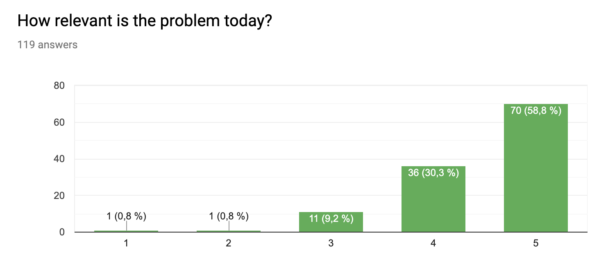

Solution
To answer this problem, we introduce our solution, GreenRoutine. GreenRoutine is both an app and machine that works towards giving people a purpose as to why they should recycle. Our solution works like this: When you recycle into the machines, you will get points. These points can later be used in the app towards getting discounts and prizes. GreenRoutine is the solution towards making more and more people be actively engaged in recycling garbage.
How does the app work?
When you first log in to the app, you get a menu that has your own QR–code which is used to start the machine, in other words, the app and the machine are linked. The app has an overview of the points list and the number of points you have collected from recycling. You have a statistic of how much of the different types of junk you've thrown weekly, and level challenges so you can level up and earn more points. In addition, you have a coupon category where you can see what kind of offers you get, depending on the time.
You can see more of the app HERE
How does the machine work?
A hatch will open once you hold the QR-code on your mobile screen toward our machine’s main display. This is the opening where you are going to send your garbage to recycle. The machine only accepts garbage inside of closed recycling bags: Blue bags for plastics, green ones for food waste and other colored bags for residual waste. These bags can be found for free at your local grocery store. Remember to double knots your bags! The machine has a color sensor that distinguishes between each bag by their respective colors. In addition, a section inside of our main tube weighs the garbage bags. These two processes happen simultaneously. Further along, our main tube branches out to three smaller tube. Each are connected to a waste container based on which sort of garbage you wanted recycled. Our machine registers the weight of your bags in grams which results in an amount of points that can be used on coupons and discounts.
When you’ve scanned your personal QR-code, you will notice that the display on our machine will verbally and textually tell you whether your QR-code is valid or not. The screen will also show you a red or green color indicating this validity.
We want every one of our users to have an easy encounter with our recycling machines. Therefore, our display provides instructions in the form of animations, by verbal explanation or with text on how you can recycle. These instructions can be turned off if you want to. Our animation runs for about a minute. After five minutes has passed, the machine will automatically close the hatch. You can also choose to close the hatch manually by scanning your QR-code on the main display again.
You can see more of the machine HERE
Why use GreenRoutine:
Our two-way solution is providing a personalized, flexible and fun way to make recycling a part of your daily routine. With our solution, you will gain the power to turn dirt and garbage into gold. We are firm believers that every action count. By using our app, your actions will have immediate positive repercussions on your local community. We are creating a movement – an eco-culture revolved around making the life of your municipality flourish. Become an eco-citizen today by implementing Green Routine in your everyday life.
For users that have disabilities:
- Poorly sighted:
- Deaf People:
- Reduced motoric ability:
- Blindness:
- Blind and deaf Braille:
- A monolingual human being:
- Color blindness:

Through an anonymous survey, we asked a total of 119 people: «How relevant is this problem today?». Most of the people we asked to complete the survey is of the younger generation, primarily of the age range 18-20. Of these people, a total of 58.8% told us that this is a very relevant problem today. We also had a total of 30.3% seeing this problem as «mostly relevant». This give us a good indication that the majority of the younger generation in Oslo believes that this is an important problem that needs a suitable solution.
Contact us for tips on how to better your user experience. Send us an e-mail HERE.